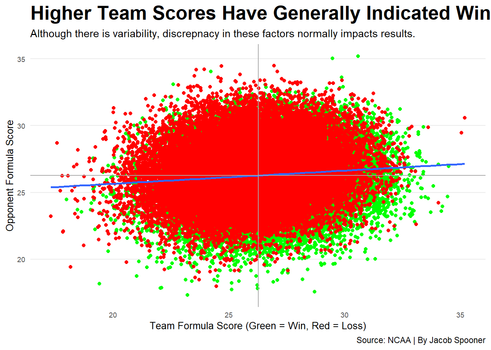

Machine Learning Madness: A Woeful Attempt at Predicting this Year’s NCAA Tourney
machine learning
code
analysis
Author
Jacob Spooner
Published
April 25, 2022
Busted brackets are nothing new. Just ask anyone who routinely fills them out for the NCAAM Basketball Tournament. Personally, I can identify with such individuals. Year after year, my predictions never fail to disappoint. This year, however, had something different in store: the use of machine learning. Could a predictive model achieve greater success than my intuition?
Unfortunately, the answer ended up as a resounding no. Competing against my classmates and professor, my bracket ultimately ranked 14th out of the 17 submitted. So what went wrong? Was it my novice status when it comes to machine learning? Or perhaps the unprecedented unpredictable nature of this year’s tourney is to blame for such a disasterclass. Regardless of the reasons, there actually was a method to my madness.
The most highly emphasized metric was effective field goal percentage. I placed importance on this metric because it accounts for the fact that three point field goals are more valuable than two point field foals. If a team is scoring high in this metric it means that they are shooting well, and if you are making shots then you are winning games (there is a reason why it is considered the most important of Dean Oliver’s Four Factors).
In addition, (although to a much lesser extent) I included points per possession, offensive rebounds, turnovers, and free throw attempts. Points per possession is important because it suggests whether or not a team is putting its possessions to good use. As for offensive rebounds and turnovers, the way I weighted these metrics sort of had them cancel out one another. This makes sense because offensive rebounds provide another crack at scoring whereas turning over the ball prevents a team from even having a chance to score. Regarding free throw attempts, I made this part of the model because a team that is consistently going to the line is providing themselves with the opportunity to points on the board.
Putting all the aforementioned factors together on a rolling basis of the last seven games, I created a variable that I referred to as formula scores for both teams and their opponents. Below is a chart that demonstrates these scores for all games dating back to 2015.
Code
win <- modelgames %>%filter(team_result =="W")loss <- modelgames %>%filter(team_result =="L")averages <- modelgames %>%ungroup() %>%summarise(Avg_team_rolling_predictive_factors =mean(team_rolling_predictivefactors), Avg_opponent_rolling_predictive_factors =mean(opponent_rolling_predictivefactors))ggplot() +geom_point(data=modelgames, aes(x=team_rolling_predictivefactors, y=opponent_rolling_predictivefactors), color="grey") +geom_point(data=win, aes(x=team_rolling_predictivefactors, y=opponent_rolling_predictivefactors), color="green") +geom_point(data=loss, aes(x=team_rolling_predictivefactors, y=opponent_rolling_predictivefactors), color="red") +geom_smooth(data=modelgames, aes(x=`team_rolling_predictivefactors`, y=`opponent_rolling_predictivefactors`), method=lm, se=FALSE) +geom_hline(yintercept=26.27, color="black") +geom_vline(xintercept=26.27, color="black") +labs(x="Team Formula Score (Green = Win, Red = Loss)",y="Opponent Formula Score", title="Higher Team Scores Have Generally Indicated Wins", subtitle="Although there is variability, discrepnacy in these factors normally impacts results.",caption="Source: NCAA | By Jacob Spooner" ) +theme_minimal() +theme(plot.title =element_text(size =18, face ="bold"),axis.title =element_text(size =10),axis.text =element_text(size =7),axis.ticks =element_blank(),panel.grid.minor =element_blank(),panel.grid.major.x =element_blank() )

Although the correlation demonstrated between wins/losses and team/opponent score is far from perfect, there is enough there to suggest that these formula scores are fairly predictive in regards to which team will come out on top. Hence, my decision to emphasize factors such as effective field goal percentage were logical in the given context of game outcomes.
While my madness did indeed have a method to it, a brave soul would be required to predict a certain result shown in the table below containing round 1’s games from the midwest region.
Code
midwestround1 %>%select(team_short_display_name, .pred_class, .pred_W, opponent_short_display_name) %>%gt() %>%cols_label(team_short_display_name ="Team",.pred_class ="Prediction",.pred_W ="Win Confidence",opponent_short_display_name ="Opponent" ) %>%tab_header(title ="Midwest Regional: First Round",subtitle ="My model was extremely confident in Colgate. Alas they got trounced." ) %>%tab_source_note(source_note =md("by: Jacob Spooner") ) %>%tab_style(style =cell_text(color ="black", weight ="bold", align ="left"),locations =cells_title("title") ) %>%tab_style(style =cell_text(color ="black", align ="left"),locations =cells_title("subtitle") )
Midwest Regional: First Round
My model was extremely confident in Colgate. Alas they got trounced.
Team
Prediction
Win Confidence
Opponent
Iowa
W
0.5380343
Auburn
Texas
L
0.2711109
Colgate
Miami
W
0.5157184
Drake
Xavier
W
0.5178294
Kennesaw St
Indiana
L
0.4475793
Kent State
Houston
L
0.3451261
N Kentucky
Texas A&M
L
0.3841507
Penn State
Iowa State
L
0.3577992
Pitt
by: Jacob Spooner
Yes, that’s right. The model had Colgate as huge favorites over Texas. Sure there were some crazy upsets in this edition of March Madness, but seriously? On what planet is a 15 seed favored by a margin that wide?
That being said, there were some solid predictions in that table such as the wins for Pitt and Penn State as well as the the narrow victories for Miami and Xavier. And then you have Northern Kentucky coming out on top against Houston. So yeah. For all the good in there, some of these predictions are truly horrific.
It is also worth mentioning that these Colgate and Northern Kentucky victories were not the only crazy upset predictions the model generated. In all honesty, it was scary how much it liked the 15 and 16 seeds and had many of them going on deep runs (although it had both Princeton and FDU losing in the first round of course). Given this issue, provided with greater amounts of time and expertise, I would have factored in the strength of schedules of these teams since I believe that failing to do so resulted in a ridiculous amount of upsets (dominating Mickey Mouse teams is not the quite the same as consistently performing well against ones featuring NBA talent galore).
So there you have it. Far from a roaring success but fun nonetheless. As embarrassing as it is, I have left images of my bracket below. Make of it what you will at your own risk.